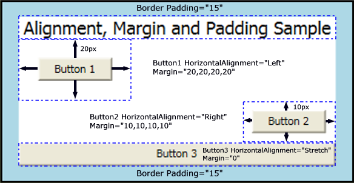

Общие сведения о свойствах Alignment, Margin, Padding
FrameworkElement Класс предоставляет несколько свойств, которые используются для точного размещения дочерних элементов. В этом разделе рассмотрены четыре наиболее важных свойства: HorizontalAlignment, Margin, Padding, и VerticalAlignment. Очень важно иметь представление о результатах применения этих свойств, поскольку они обеспечивают основу для управления положением элементов в приложениях Windows Presentation Foundation (WPF).
Введение в позиционирование элементов
Существуют разные способы позиционирования элементов с помощью WPF. Однако идеальный макет достигается не просто выбором справа Panel элемент. Точное управление размещением требует понимания HorizontalAlignment, Margin, Padding, и VerticalAlignment свойства.
На следующем рисунке показан сценарий макета, использующий несколько свойств размещения.
На первый взгляд Button может появиться элементы на этой иллюстрации размещены случайным образом. На самом деле их положение точно контролируется с помощью сочетания полей, выравнивания и заполнения.
В следующем примере демонстрируется создание макета, показанного на предыдущем рисунке. Объект Border инкапсулирует родительский StackPanel, с помощью Padding значение 15 аппаратно-независимых пикселях. Это учитывается для узкой LightBlue аппаратного контроллера управления, которая окружает дочерний элемент StackPanel. Дочерние элементы StackPanel используются для иллюстрации каждого из различных свойств размещения, которые подробно описаны в этом разделе. Три Button элементы используются для демонстрации Margin и HorizontalAlignment свойства.
// Create the application's main Window.
mainWindow = new Window ();
mainWindow.Title = "Margins, Padding and Alignment Sample";
// Add a Border
myBorder = new Border();
myBorder.Background = Brushes.LightBlue;
myBorder.BorderBrush = Brushes.Black;
myBorder.Padding = new Thickness(15);
myBorder.BorderThickness = new Thickness(2);
myStackPanel = new StackPanel();
myStackPanel.Background = Brushes.White;
myStackPanel.HorizontalAlignment = HorizontalAlignment.Center;
myStackPanel.VerticalAlignment = VerticalAlignment.Top;
TextBlock myTextBlock = new TextBlock();
myTextBlock.Margin = new Thickness(5, 0, 5, 0);
myTextBlock.FontSize = 18;
myTextBlock.HorizontalAlignment = HorizontalAlignment.Center;
myTextBlock.Text = "Alignment, Margin and Padding Sample";
Button myButton1 = new Button();
myButton1.HorizontalAlignment = HorizontalAlignment.Left;
myButton1.Margin = new Thickness(20);
myButton1.Content = "Button 1";
Button myButton2 = new Button();
myButton2.HorizontalAlignment = HorizontalAlignment.Right;
myButton2.Margin = new Thickness(10);
myButton2.Content = "Button 2";
Button myButton3 = new Button();
myButton3.HorizontalAlignment = HorizontalAlignment.Stretch;
myButton3.Margin = new Thickness(0);
myButton3.Content = "Button 3";
// Add child elements to the parent StackPanel.
myStackPanel.Children.Add(myTextBlock);
myStackPanel.Children.Add(myButton1);
myStackPanel.Children.Add(myButton2);
myStackPanel.Children.Add(myButton3);
// Add the StackPanel as the lone Child of the Border.
myBorder.Child = myStackPanel;
// Add the Border as the Content of the Parent Window Object.
mainWindow.Content = myBorder;
mainWindow.Show ();
Следующая схема обеспечивает подробное представление различных свойств размещения, примененных в предыдущем примере. В последующих разделах этой статьи более подробно описывается использование каждого свойства размещения.

Общие сведения о свойствах Alignment
HorizontalAlignment И VerticalAlignment свойства описывают, как дочерний элемент должен быть размещен в родительском элементе выделенного пространства макета. При совместном использовании этих свойств можно точно расположить дочерние элементы. Например, дочерние элементы DockPanel можно указать четыре разных горизонтального выравнивания: Left, Right, или Center, или Stretch для заполнения доступного пространства. Аналогичные значения доступны для вертикального размещения.
Note
Явно заданные Height и Width свойств в элементе имеют приоритет над Stretch значение свойства. Попытка задать Height, Widthи HorizontalAlignment значение Stretch приводит Stretch запроса игнорируются.
Свойство HorizontalAlignment
HorizontalAlignment Свойство объявляет характеристики горизонтального выравнивания для применения к дочерним элементам. Ниже показаны все возможные значения HorizontalAlignment свойство.
| Член | Описание |
|---|---|
| Left | Дочерние элементы выравниваются по левому краю выделенного пространства макета родительского элемента. |
| Center | Дочерние элементы выравниваются по центру выделенного пространства макета родительского элемента. |
| Right | Дочерние элементы выравниваются по правому краю выделенного пространства макета родительского элемента. |
| Stretch (Значение по умолчанию) | Дочерние элементы растягиваются для заполнения выделенного пространства макета родительского элемента. Явные Width и Height значения имеют приоритет. |
В следующем примере показано, как применить HorizontalAlignment свойства Button элементов. Показаны все значения атрибутов, чтобы проиллюстрировать различные режимы отрисовки.
Button myButton1 = new Button();
myButton1.HorizontalAlignment = HorizontalAlignment.Left;
myButton1.Content = "Button 1 (Left)";
Button myButton2 = new Button();
myButton2.HorizontalAlignment = HorizontalAlignment.Right;
myButton2.Content = "Button 2 (Right)";
Button myButton3 = new Button();
myButton3.HorizontalAlignment = HorizontalAlignment.Center;
myButton3.Content = "Button 3 (Center)";
Button myButton4 = new Button();
myButton4.HorizontalAlignment = HorizontalAlignment.Stretch;
myButton4.Content = "Button 4 (Stretch)";
Приведенный выше код создает макет, похожий на следующий рисунок. Эффекты размещения для каждого HorizontalAlignment значение видны на рисунке.
Свойство VerticalAlignment
VerticalAlignment Свойство описывает характеристики вертикального выравнивания, чтобы применить к дочерним элементам. В следующей таблице показаны все возможные значения для VerticalAlignment свойство.
| Член | Описание |
|---|---|
| Top | Дочерние элементы выравниваются по верхнему краю выделенного пространства макета родительского элемента. |
| Center | Дочерние элементы выравниваются по центру выделенного пространства макета родительского элемента. |
| Bottom | Дочерние элементы выравниваются по нижнему краю выделенного пространства макета родительского элемента. |
| Stretch (Значение по умолчанию) | Дочерние элементы растягиваются для заполнения выделенного пространства макета родительского элемента. Явные Width и Height значения имеют приоритет. |
В следующем примере показано, как применить VerticalAlignment свойства Button элементов. Показаны все значения атрибутов, чтобы проиллюстрировать различные режимы отрисовки. Для данного примера Grid с видимым линиями сетки используется в качестве родительского для лучшей иллюстрации поведения каждого значения свойства.
TextBlock myTextBlock = new TextBlock();
myTextBlock.FontSize = 18;
myTextBlock.HorizontalAlignment = HorizontalAlignment.Center;
myTextBlock.Text = "VerticalAlignment Sample";
Grid.SetRow(myTextBlock, 0);
Button myButton1 = new Button();
myButton1.VerticalAlignment = VerticalAlignment.Top;
myButton1.Content = "Button 1 (Top)";
Grid.SetRow(myButton1, 1);
Button myButton2 = new Button();
myButton2.VerticalAlignment = VerticalAlignment.Bottom;
myButton2.Content = "Button 2 (Bottom)";
Grid.SetRow(myButton2, 2);
Button myButton3 = new Button();
myButton3.VerticalAlignment = VerticalAlignment.Center;
myButton3.Content = "Button 3 (Center)";
Grid.SetRow(myButton3, 3);
Button myButton4 = new Button();
myButton4.VerticalAlignment = VerticalAlignment.Stretch;
myButton4.Content = "Button 4 (Stretch)";
Grid.SetRow(myButton4, 4);
<Page xmlns="http://schemas.microsoft.com/winfx/2006/xaml/presentation"
xmlns:x="http://schemas.microsoft.com/winfx/2006/xaml"
WindowTitle="VerticalAlignment Sample">
<Border Background="LightBlue" BorderBrush="Black" BorderThickness="2" Padding="15">
<Grid Background="White" ShowGridLines="True">
<Grid.RowDefinitions>
<RowDefinition Height="25"/>
<RowDefinition Height="50"/>
<RowDefinition Height="50"/>
<RowDefinition Height="50"/>
<RowDefinition Height="50"/>
</Grid.RowDefinitions>
<TextBlock Grid.Row="0" Grid.Column="0" FontSize="18" HorizontalAlignment="Center">VerticalAlignment Sample</TextBlock>
<Button Grid.Row="1" Grid.Column="0" VerticalAlignment="Top">Button 1 (Top)</Button>
<Button Grid.Row="2" Grid.Column="0" VerticalAlignment="Bottom">Button 2 (Bottom)</Button>
<Button Grid.Row="3" Grid.Column="0" VerticalAlignment="Center">Button 3 (Center)</Button>
<Button Grid.Row="4" Grid.Column="0" VerticalAlignment="Stretch">Button 4 (Stretch)</Button>
</Grid>
</Border>
</Page>
Приведенный выше код создает макет, похожий на следующий рисунок. Эффекты размещения для каждого VerticalAlignment значение видны на рисунке.
Основные сведения о свойствах Margin
Margin Свойство описывает расстояние между элементом и его дочерних или одноранговых узлов. Margin значения могут быть однородными, используя следующий синтаксис Margin="20". С помощью этого синтаксиса равномерное Margin 20 устройства независимых пикселях будут применяться к элементу. Margin значения может также принимать форму четыре различных значений, описывающих различные поля слева, сверху, справа и снизу (в таком порядке), как Margin="0,10,5,25". Правильное использование Margin свойство позволяет очень точно управлять положением отрисовки элемента и положения его соседних и дочерних элементов.
Note
Ненулевое значение поля применяет пространство за пределами этого элемента ActualWidth и ActualHeight.
В следующем примере показано, как применить однородные поля группы Button элементов. Button Элементы расположены равномерно с буфером 10 точек в каждом направлении.
Button myButton7 = new Button();
myButton7.Margin = new Thickness(10);
myButton7.Content = "Button 7";
Button myButton8 = new Button();
myButton8.Margin = new Thickness(10);
myButton8.Content = "Button 8";
Button myButton9 = new Button();
myButton9.Margin = new Thickness(10);
myButton9.Content = "Button 9";
<Button Margin="10">Button 7</Button>
<Button Margin="10">Button 8</Button>
<Button Margin="10">Button 9</Button>
Во многих случаях универсальные поля не подходят. В этих случаях можно применять неоднородные интервалы. В следующем примере показано применение неоднородных полей к дочерним элементам. Поля описываются в следующем порядке: слева, сверху, справа, снизу.
Button myButton1 = new Button();
myButton1.Margin = new Thickness(0, 10, 0, 10);
myButton1.Content = "Button 1";
Button myButton2 = new Button();
myButton2.Margin = new Thickness(0, 10, 0, 10);
myButton2.Content = "Button 2";
Button myButton3 = new Button();
myButton3.Margin = new Thickness(0, 10, 0, 10);
<Button Margin="0,10,0,10">Button 1</Button>
<Button Margin="0,10,0,10">Button 2</Button>
<Button Margin="0,10,0,10">Button 3</Button>
Основные сведения о свойстве Padding
Аналогично свойству Margin во многом. Свойство Padding предоставляется в только в нескольких классах, главным образом для удобства: Block, Border, Control, и TextBlock являются примерами классов, которые предоставляют свойство Padding. Padding Свойство увеличивает эффективный размер дочернего элемента по заданному Thickness значение.
В следующем примере показано, как применить Padding к родительскому элементу Border элемент.
myBorder = new Border();
myBorder.Background = Brushes.LightBlue;
myBorder.BorderBrush = Brushes.Black;
myBorder.BorderThickness = new Thickness(2);
myBorder.CornerRadius = new CornerRadius(45);
myBorder.Padding = new Thickness(25);
<Border Background="LightBlue"
BorderBrush="Black"
BorderThickness="2"
CornerRadius="45"
Padding="25">
Использование свойств Alignment, Margin и Padding в приложении
HorizontalAlignment, Margin, Padding, и VerticalAlignment предоставляют управления размещением, необходимые для создания сложного пользовательский интерфейс. Эффекты каждого свойства позволяют изменить размещение дочерних элементов, обеспечивая гибкость создания динамических приложений и интерфейсов пользователя.
В следующем примере демонстрируются понятия, описанные в этом разделе. Основываясь на инфраструктуре, приведенной в первом примере этого раздела, в этом примере добавляется Grid как дочерний элемент элемента Border в первом примере. Padding применяется к родительскому Border элемент. Grid Используется для разделения пространства между тремя дочерними StackPanel элементов. Button элементы повторно используются для отображения различных эффектов Margin и HorizontalAlignment. TextBlock элементы добавляются к каждому ColumnDefinition для лучшего определения различных свойств, применяемых к Button элементов в каждом столбце.
mainWindow = new Window();
myBorder = new Border();
myBorder.Background = Brushes.LightBlue;
myBorder.BorderBrush = Brushes.Black;
myBorder.BorderThickness = new Thickness(2);
myBorder.CornerRadius = new CornerRadius(45);
myBorder.Padding = new Thickness(25);
// Define the Grid.
myGrid = new Grid();
myGrid.Background = Brushes.White;
myGrid.ShowGridLines = true;
// Define the Columns.
ColumnDefinition myColDef1 = new ColumnDefinition();
myColDef1.Width = new GridLength(1, GridUnitType.Auto);
ColumnDefinition myColDef2 = new ColumnDefinition();
myColDef2.Width = new GridLength(1, GridUnitType.Star);
ColumnDefinition myColDef3 = new ColumnDefinition();
myColDef3.Width = new GridLength(1, GridUnitType.Auto);
// Add the ColumnDefinitions to the Grid.
myGrid.ColumnDefinitions.Add(myColDef1);
myGrid.ColumnDefinitions.Add(myColDef2);
myGrid.ColumnDefinitions.Add(myColDef3);
// Add the first child StackPanel.
StackPanel myStackPanel = new StackPanel();
myStackPanel.HorizontalAlignment = HorizontalAlignment.Left;
myStackPanel.VerticalAlignment = VerticalAlignment.Top;
Grid.SetColumn(myStackPanel, 0);
Grid.SetRow(myStackPanel, 0);
TextBlock myTextBlock1 = new TextBlock();
myTextBlock1.FontSize = 18;
myTextBlock1.HorizontalAlignment = HorizontalAlignment.Center;
myTextBlock1.Margin = new Thickness(0, 0, 0, 15);
myTextBlock1.Text = "StackPanel 1";
Button myButton1 = new Button();
myButton1.Margin = new Thickness(0, 10, 0, 10);
myButton1.Content = "Button 1";
Button myButton2 = new Button();
myButton2.Margin = new Thickness(0, 10, 0, 10);
myButton2.Content = "Button 2";
Button myButton3 = new Button();
myButton3.Margin = new Thickness(0, 10, 0, 10);
TextBlock myTextBlock2 = new TextBlock();
myTextBlock2.Text = @"ColumnDefinition.Width = ""Auto""";
TextBlock myTextBlock3 = new TextBlock();
myTextBlock3.Text = @"StackPanel.HorizontalAlignment = ""Left""";
TextBlock myTextBlock4 = new TextBlock();
myTextBlock4.Text = @"StackPanel.VerticalAlignment = ""Top""";
TextBlock myTextBlock5 = new TextBlock();
myTextBlock5.Text = @"StackPanel.Orientation = ""Vertical""";
TextBlock myTextBlock6 = new TextBlock();
myTextBlock6.Text = @"Button.Margin = ""1,10,0,10""";
myStackPanel.Children.Add(myTextBlock1);
myStackPanel.Children.Add(myButton1);
myStackPanel.Children.Add(myButton2);
myStackPanel.Children.Add(myButton3);
myStackPanel.Children.Add(myTextBlock2);
myStackPanel.Children.Add(myTextBlock3);
myStackPanel.Children.Add(myTextBlock4);
myStackPanel.Children.Add(myTextBlock5);
myStackPanel.Children.Add(myTextBlock6);
// Add the second child StackPanel.
StackPanel myStackPanel2 = new StackPanel();
myStackPanel2.HorizontalAlignment = HorizontalAlignment.Stretch;
myStackPanel2.VerticalAlignment = VerticalAlignment.Top;
myStackPanel2.Orientation = Orientation.Vertical;
Grid.SetColumn(myStackPanel2, 1);
Grid.SetRow(myStackPanel2, 0);
TextBlock myTextBlock7 = new TextBlock();
myTextBlock7.FontSize = 18;
myTextBlock7.HorizontalAlignment = HorizontalAlignment.Center;
myTextBlock7.Margin = new Thickness(0, 0, 0, 15);
myTextBlock7.Text = "StackPanel 2";
Button myButton4 = new Button();
myButton4.Margin = new Thickness(10, 0, 10, 0);
myButton4.Content = "Button 4";
Button myButton5 = new Button();
myButton5.Margin = new Thickness(10, 0, 10, 0);
myButton5.Content = "Button 5";
Button myButton6 = new Button();
myButton6.Margin = new Thickness(10, 0, 10, 0);
myButton6.Content = "Button 6";
TextBlock myTextBlock8 = new TextBlock();
myTextBlock8.HorizontalAlignment = HorizontalAlignment.Center;
myTextBlock8.Text = @"ColumnDefinition.Width = ""*""";
TextBlock myTextBlock9 = new TextBlock();
myTextBlock9.HorizontalAlignment = HorizontalAlignment.Center;
myTextBlock9.Text = @"StackPanel.HorizontalAlignment = ""Stretch""";
TextBlock myTextBlock10 = new TextBlock();
myTextBlock10.HorizontalAlignment = HorizontalAlignment.Center;
myTextBlock10.Text = @"StackPanel.VerticalAlignment = ""Top""";
TextBlock myTextBlock11 = new TextBlock();
myTextBlock11.HorizontalAlignment = HorizontalAlignment.Center;
myTextBlock11.Text = @"StackPanel.Orientation = ""Horizontal""";
TextBlock myTextBlock12 = new TextBlock();
myTextBlock12.HorizontalAlignment = HorizontalAlignment.Center;
myTextBlock12.Text = @"Button.Margin = ""10,0,10,0""";
myStackPanel2.Children.Add(myTextBlock7);
myStackPanel2.Children.Add(myButton4);
myStackPanel2.Children.Add(myButton5);
myStackPanel2.Children.Add(myButton6);
myStackPanel2.Children.Add(myTextBlock8);
myStackPanel2.Children.Add(myTextBlock9);
myStackPanel2.Children.Add(myTextBlock10);
myStackPanel2.Children.Add(myTextBlock11);
myStackPanel2.Children.Add(myTextBlock12);
// Add the final child StackPanel.
StackPanel myStackPanel3 = new StackPanel();
myStackPanel3.HorizontalAlignment = HorizontalAlignment.Left;
myStackPanel3.VerticalAlignment = VerticalAlignment.Top;
Grid.SetColumn(myStackPanel3, 2);
Grid.SetRow(myStackPanel3, 0);
TextBlock myTextBlock13 = new TextBlock();
myTextBlock13.FontSize = 18;
myTextBlock13.HorizontalAlignment = HorizontalAlignment.Center;
myTextBlock13.Margin = new Thickness(0, 0, 0, 15);
myTextBlock13.Text = "StackPanel 3";
Button myButton7 = new Button();
myButton7.Margin = new Thickness(10);
myButton7.Content = "Button 7";
Button myButton8 = new Button();
myButton8.Margin = new Thickness(10);
myButton8.Content = "Button 8";
Button myButton9 = new Button();
myButton9.Margin = new Thickness(10);
myButton9.Content = "Button 9";
TextBlock myTextBlock14 = new TextBlock();
myTextBlock14.Text = @"ColumnDefinition.Width = ""Auto""";
TextBlock myTextBlock15 = new TextBlock();
myTextBlock15.Text = @"StackPanel.HorizontalAlignment = ""Left""";
TextBlock myTextBlock16 = new TextBlock();
myTextBlock16.Text = @"StackPanel.VerticalAlignment = ""Top""";
TextBlock myTextBlock17 = new TextBlock();
myTextBlock17.Text = @"StackPanel.Orientation = ""Vertical""";
TextBlock myTextBlock18 = new TextBlock();
myTextBlock18.Text = @"Button.Margin = ""10""";
myStackPanel3.Children.Add(myTextBlock13);
myStackPanel3.Children.Add(myButton7);
myStackPanel3.Children.Add(myButton8);
myStackPanel3.Children.Add(myButton9);
myStackPanel3.Children.Add(myTextBlock14);
myStackPanel3.Children.Add(myTextBlock15);
myStackPanel3.Children.Add(myTextBlock16);
myStackPanel3.Children.Add(myTextBlock17);
myStackPanel3.Children.Add(myTextBlock18);
// Add child content to the parent Grid.
myGrid.Children.Add(myStackPanel);
myGrid.Children.Add(myStackPanel2);
myGrid.Children.Add(myStackPanel3);
// Add the Grid as the lone child of the Border.
myBorder.Child = myGrid;
// Add the Border to the Window as Content and show the Window.
mainWindow.Content = myBorder;
mainWindow.Title = "Margin, Padding, and Alignment Sample";
mainWindow.Show();
<Page xmlns="http://schemas.microsoft.com/winfx/2006/xaml/presentation" WindowTitle="Margins, Padding and Alignment Sample">
<Border Background="LightBlue"
BorderBrush="Black"
BorderThickness="2"
CornerRadius="45"
Padding="25">
<Grid Background="White" ShowGridLines="True">
<Grid.ColumnDefinitions>
<ColumnDefinition Width="Auto"/>
<ColumnDefinition Width="*"/>
<ColumnDefinition Width="Auto"/>
</Grid.ColumnDefinitions>
<StackPanel Grid.Column="0" Grid.Row="0" HorizontalAlignment="Left" Name="StackPanel1" VerticalAlignment="Top">
<TextBlock FontSize="18" HorizontalAlignment="Center" Margin="0,0,0,15">StackPanel1</TextBlock>
<Button Margin="0,10,0,10">Button 1</Button>
<Button Margin="0,10,0,10">Button 2</Button>
<Button Margin="0,10,0,10">Button 3</Button>
<TextBlock>ColumnDefinition.Width="Auto"</TextBlock>
<TextBlock>StackPanel.HorizontalAlignment="Left"</TextBlock>
<TextBlock>StackPanel.VerticalAlignment="Top"</TextBlock>
<TextBlock>StackPanel.Orientation="Vertical"</TextBlock>
<TextBlock>Button.Margin="0,10,0,10"</TextBlock>
</StackPanel>
<StackPanel Grid.Column="1" Grid.Row="0" HorizontalAlignment="Stretch" Name="StackPanel2" VerticalAlignment="Top" Orientation="Vertical">
<TextBlock FontSize="18" HorizontalAlignment="Center" Margin="0,0,0,15">StackPanel2</TextBlock>
<Button Margin="10,0,10,0">Button 4</Button>
<Button Margin="10,0,10,0">Button 5</Button>
<Button Margin="10,0,10,0">Button 6</Button>
<TextBlock HorizontalAlignment="Center">ColumnDefinition.Width="*"</TextBlock>
<TextBlock HorizontalAlignment="Center">StackPanel.HorizontalAlignment="Stretch"</TextBlock>
<TextBlock HorizontalAlignment="Center">StackPanel.VerticalAlignment="Top"</TextBlock>
<TextBlock HorizontalAlignment="Center">StackPanel.Orientation="Horizontal"</TextBlock>
<TextBlock HorizontalAlignment="Center">Button.Margin="10,0,10,0"</TextBlock>
</StackPanel>
<StackPanel Grid.Column="2" Grid.Row="0" HorizontalAlignment="Left" Name="StackPanel3" VerticalAlignment="Top">
<TextBlock FontSize="18" HorizontalAlignment="Center" Margin="0,0,0,15">StackPanel3</TextBlock>
<Button Margin="10">Button 7</Button>
<Button Margin="10">Button 8</Button>
<Button Margin="10">Button 9</Button>
<TextBlock>ColumnDefinition.Width="Auto"</TextBlock>
<TextBlock>StackPanel.HorizontalAlignment="Left"</TextBlock>
<TextBlock>StackPanel.VerticalAlignment="Top"</TextBlock>
<TextBlock>StackPanel.Orientation="Vertical"</TextBlock>
<TextBlock>Button.Margin="10"</TextBlock>
</StackPanel>
</Grid>
</Border>
</Page>
При компиляции приведенное выше приложение создает UI, который показан на рисунке ниже. Влияние различных значений свойств выражается интервалами между элементами, а существенные изменения значений свойств для элементов в каждом столбце отображаются внутри TextBlock элементов.
Что дальше?
Свойства позиционирования, определенные FrameworkElement класс обеспечивают точное управление размещением элементов в WPF приложений. Вы получаете в свое распоряжение несколько способов, позволяющих более эффективно размещать элементы с помощью WPF.
Доступны дополнительные ресурсы, в которых макет WPF рассматривается более подробно. Общие сведения о панелях разделе содержатся более подробные сведения о различных Panel элементов. Раздел Пошаговое руководство: Создание первого классического приложения WPF рассмотрены дополнительные методики, использующие элементы макета для размещения компонентов и привязки их действий к источникам данных.